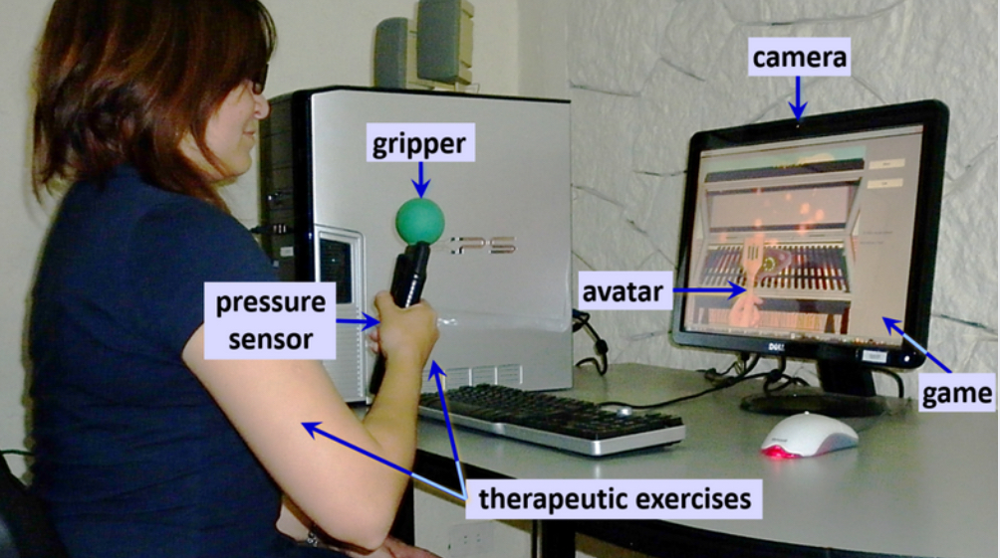
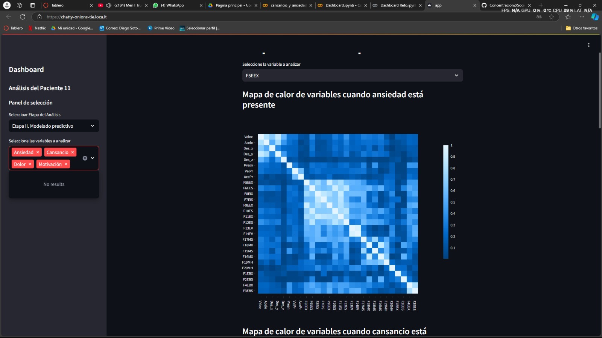
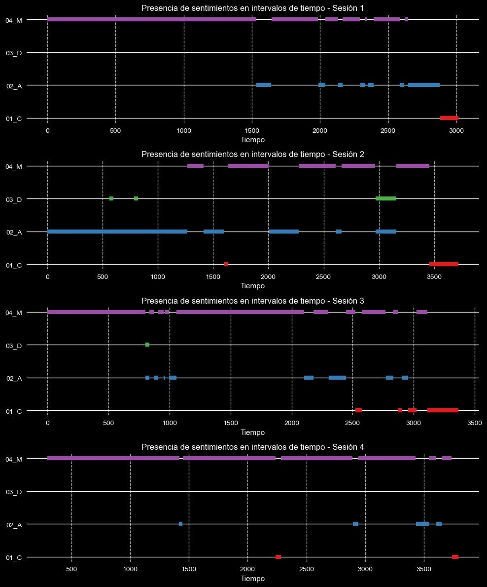
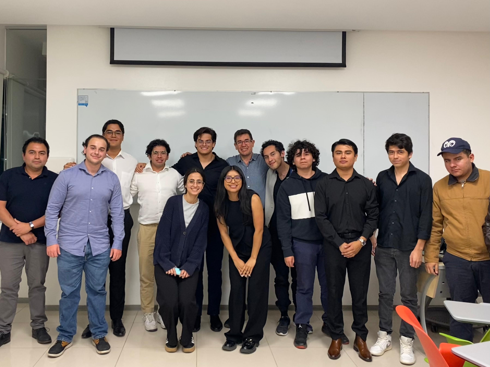

We collaborated analyzing the data behavior of 3 different patients during their time in their therapies.
The data we analyzed was a file with a content of 32 columns and 1115 rows. The 1115 rows represents the variations of the variables during the period of time while the patient was in their therapy.
The 32 variables of the file were devided as the following:

For more details of the main project, visit the Multi-Label Rehabilitation Paper (PDF).
The challange faced in this project was cleaning, interpreting, and visualizing the data of the patients in a way that could be useful for the researchers. The data was not clean, and it required a lot of preprocessing to be able to analyze it effectively. We also had to ensure that the visualizations were clear and easy to understand for the researchers.
As a first step for this project we made a data cleaning to standarize the data and replace Null Data, after doing and automatizing the backend of the code to get the clean dataset we start the phase were we made the mock up.
At this point of the investigation we didn't have cleared what we wanted to present we had multiple hypothesis and we began analyzing in more detail the behaivor of the data in a historical way.
We made a heat map to see in a visual way how the variables relationate between them, in this case we had a heatmap that the user could select which variable to analyze to see the behaivor easier.

Once we started playing with the data we began to form our hypothesis, in this case we saw that the most related variables where they presented some advances were the variables related with their emotions. As you can see in the following image

The image presented above represents how was the distribution of the emotions between the different sessions of the patients, as you can see the emotions that were more presented were the "Motivated" (Represented as 04_M) and "Anxiety" (Represented as 02_A), this could be related with the fact that the patients felt more comfortable with the therapy and they were able to perform better in their exercises.
As a result of the great communication with the investigators, collaborators we developed an interactive dashboard capable to show in a visual way the information recollected previously, transformed and analyzed in a detailed way.
The dashboard presented also helps to synthetize the information and make it understandable even for people who are not involved in the medical environment.
We used the Streamlit library to create the dashboard, which allowed us to create an interactive and user-friendly interface for the researchers.
Talking about the results found about our patient, we found some interesting patterns in the data, for example, we found that the patient over time, the tracking points of the face were closer and the gap between the paralysis was getting smaller.

Here you can find a link to the PDF manual of the dashboard, which explains how to use it, what each section means and some of the results found: Dashboard Manual (PDF - Spanish Version)

Team Members (Developers):
Teachers: Dr. Rigoberto Cerino Jiménez & Dr. Juan Manuel Ahuactzin Larios
Github: Access Code